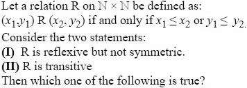
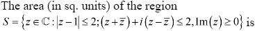
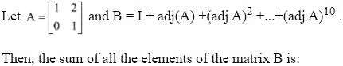
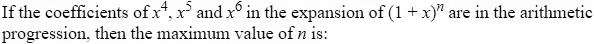
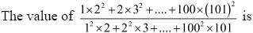
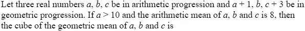
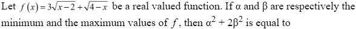
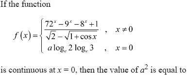
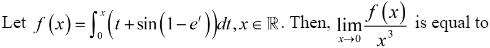
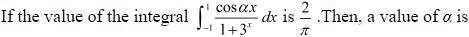

JEE Main 2024 (Session 2), 4 Apr Shift 2: worked solutions for review
Questions and options are NTA’s own images; the green option is NTA’s final key. Every solution below was written by Claude
and checked against NTA’s final key. It is not NTA’s solution. Please mark anything unclear or wrong.
Q1 · Mathematics · MCQ · ID 68019113794

Hint 1: Test each property with small pairs. For a 'not' answer, one counterexample is enough.
Hint 2: Reflexive: x1 ≤ x1. For symmetry try (1,1) and (2,2). For transitivity look for a chain where the 'or' is satisfied by different coordinates each time.
What this tests: Relations: reflexive, symmetric, transitive with an 'or' condition
1. Reflexive: x1 ≤ x1 is always true, so (a,b) R (a,b).
2. Not symmetric: (1,1) R (2,2) since 1 ≤ 2, but (2,2) R (1,1) fails (2 > 1 and 2 > 1).
3. Not transitive: (3,1) R (1,2) (as 1 ≤ 2) and (1,2) R (2,0) (as 1 ≤ 2), but (3,1) R (2,0) fails (3 > 2, 1 > 0).
4. So only statement I is correct.
Answer: (1)
If this felt hard: An 'or' condition can be satisfied by different coordinates at each step, which breaks transitivity. Revise the Relations and Functions chapter, especially building counterexamples.
Claude’s answer: 1 · NTA final key: 1 · agrees · Answer recomputed by script (tools/verify_pyq_solutions.py)
Q2 · Mathematics · MCQ · ID 68019113795

Hint 1: Turn each condition into x and y. The middle one becomes a straight line.
Hint 2: With z = x + iy: z + z̄ = 2x and i(z − z̄) = −2y, so the condition is x − y ≤ 1. This line passes through the centre (1, 0) of the disc.
What this tests: Regions in the complex plane: disc cut by lines through its centre
1. |z − 1| ≤ 2 is the disc with centre (1, 0), radius 2.
2. (z + z̄) + i(z − z̄) = 2x − 2y ≤ 2, i.e. y ≥ x − 1: the side of a 45° line through the centre that contains (0, 0).
3. Im z ≥ 0 keeps y ≥ 0, a horizontal line also through the centre.
4. Measured from the centre, the region is the sector from angle π/4 to π, i.e. angle 3π/4.
5. Area = (1/2) r2 θ = (1/2)(4)(3π/4) = 3π/2.
Answer: (1)
If this felt hard: Both lines pass through the centre, so the region is a sector. Revise loci in Complex Numbers and the sector area formula.
Claude’s answer: 1 · NTA final key: 1 · agrees · Answer recomputed with SymPy (tools/verify_pyq_solutions.py)
Q3 · Mathematics · MCQ · ID 68019113796

Hint 1: Find adj A first, then look at the pattern of its powers.
Hint 2: adj A = [[1, −2], [0, 1]], and [[1, a],[0, 1]]k = [[1, ka],[0, 1]].
What this tests: Adjoint of a matrix and powers of a shear matrix
1. For A = [[1, 2],[0, 1]], adj A = [[1, −2],[0, 1]].
2. (adj A)k = [[1, −2k],[0, 1]], including k = 0 (the identity).
3. B = sum for k = 0 to 10: top-left 11, top-right −2(0 + 1 + … + 10) = −110, bottom-left 0, bottom-right 11.
4. Sum of elements = 11 − 110 + 0 + 11 = −88.
Answer: (4)
If this felt hard: Spotting the pattern in powers saves a lot of work here. Revise adjoint of a 2 × 2 matrix in Matrices and Determinants.
Claude’s answer: 4 · NTA final key: 4 · agrees · Answer recomputed with SymPy (tools/verify_pyq_solutions.py)
Q4 · Mathematics · MCQ · ID 68019113797

Hint 1: Write the AP condition 2 · middle = first + last using binomial coefficients.
Hint 2: 2·C(n,5) = C(n,4) + C(n,6). Divide by C(n,5) and use C(n,r)/C(n,r−1) = (n−r+1)/r.
What this tests: Binomial coefficients in arithmetic progression
1. AP: 2C(n,5) = C(n,4) + C(n,6).
2. Dividing by C(n,5): 2 = 5/(n − 4) + (n − 5)/6.
3. Clearing denominators: n2 − 21n + 98 = 0, so n = 7 or n = 14.
4. The maximum value is 14.
Answer: (2)
If this felt hard: The ratio of consecutive binomial coefficients turns this into a quadratic. Revise properties of binomial coefficients.
Claude’s answer: 2 · NTA final key: 2 · agrees · Answer recomputed with SymPy (tools/verify_pyq_solutions.py)
Q5 · Mathematics · MCQ · ID 68019113798

Hint 1: Write the general terms of the numerator and denominator and expand them.
Hint 2: Numerator term k(k+1)2 = k3 + 2k2 + k; denominator term k2(k+1) = k3 + k2. Use the standard sums and factorise.
What this tests: Sums of powers of natural numbers (Σk, Σk2, Σk3)
1. Numerator = Σ (k3 + 2k2 + k) = n(n+1)(n+2)(3n+5)/12.
2. Denominator = Σ (k3 + k2) = n(n+1)(n+2)(3n+1)/12.
3. Ratio = (3n + 5)/(3n + 1). With n = 100: 305/301.
Answer: (2)
If this felt hard: Factorising the general sums before putting n = 100 avoids big numbers. Revise the standard sums in Sequences and Series.
Claude’s answer: 2 · NTA final key: 2 · agrees · Answer recomputed with SymPy (tools/verify_pyq_solutions.py)
Q6 · Mathematics · MCQ · ID 68019113799

Hint 1: The AM of a, b, c is 8. What does that tell you about b?
Hint 2: b = 8 and a + c = 16. Then 82 = (a + 1)(c + 3).
What this tests: AP and GP conditions together
1. AP with mean 8 gives b = 8 and a + c = 16.
2. GP: 64 = (a + 1)(19 − a), so a2 − 18a + 45 = 0, a = 15 or 3.
3. a > 10 gives a = 15, c = 1.
4. Cube of the GM of a, b, c = abc = 15 × 8 × 1 = 120.
Answer: (3)
If this felt hard: The cube of the geometric mean of three numbers is just their product. Revise AM and GM in Sequences and Series.
Claude’s answer: 3 · NTA final key: 3 · agrees · Answer recomputed with SymPy (tools/verify_pyq_solutions.py)
Q7 · Mathematics · MCQ · ID 68019113800

Hint 1: First find the domain. Then think about where a sum of two square roots is largest.
Hint 2: Domain [2, 4]. For the maximum use Cauchy–Schwarz: 3√u + 1·√v ≤ √(32 + 12) · √(u + v) with u + v = 2.
What this tests: Maximum and minimum of a function on a closed interval
1. Domain: x ≥ 2 and x ≤ 4.
2. Ends: f(2) = √2, f(4) = 3√2. f is increasing then decreasing (it is concave), so the minimum is at an end: α = √2.
3. Maximum: f ≤ √(9 + 1)·√2 = 2√5 (equality at x = 3.8), so β = 2√5.
4. α2 + 2β2 = 2 + 40 = 42.
Answer: (4)
If this felt hard: A common slip is taking the larger endpoint value as the maximum. Revise Application of Derivatives (or Cauchy–Schwarz for such sums).
Claude’s answer: 4 · NTA final key: 4 · agrees · Answer recomputed with SymPy (tools/verify_pyq_solutions.py)
Q8 · Mathematics · MCQ · ID 68019113801

Hint 1: Factorise the numerator; 72 = 8 × 9. Then expand the denominator for small x.
Hint 2: 72x − 9x − 8x + 1 = (8x − 1)(9x − 1) ≈ x2 ln 8 ln 9, and √2 − √(1 + cos x) ≈ √2 x2/8.
What this tests: Limits with standard expansions; continuity
1. Numerator = (8x − 1)(9x − 1) ≈ x2 (3 ln 2)(2 ln 3) = 6x2 ln 2 ln 3.
2. 1 + cos x ≈ 2 − x2/2, so √(1 + cos x) ≈ √2 (1 − x2/8); the denominator ≈ √2 x2/8.
3. Limit = 6 ln 2 ln 3 × 8/√2 = 24√2 ln 2 ln 3.
4. Continuity: a = 24√2, so a2 = 1152.
Answer: (3)
If this felt hard: Factorising the numerator is the key trick. Revise standard limits (ax − 1)/x and rationalising in Limits and Continuity.
Claude’s answer: 3 · NTA final key: 3 · agrees · Answer recomputed with SymPy (tools/verify_pyq_solutions.py)
Q9 · Mathematics · MCQ · ID 68019113802

Hint 1: Use L'Hôpital, or find the first non-zero term of f'(x) near 0.
Hint 2: f'(x) = x + sin(1 − ex). Expand 1 − ex = −x − x2/2 − …
What this tests: Limits involving integrals (Leibniz rule + series)
1. f'(x) = x + sin(1 − ex).
2. 1 − ex = −x − x2/2 + …, and sin u ≈ u for small u, so sin(1 − ex) = −x − x2/2 + O(x3).
3. f'(x) ≈ −x2/2, so f(x) ≈ −x3/6.
4. Limit = −1/6.
Answer: (4)
If this felt hard: Differentiating the integral first makes this easy. Revise the Leibniz rule and series expansions of ex and sin x.
Claude’s answer: 4 · NTA final key: 4 · agrees · Answer recomputed with SymPy (tools/verify_pyq_solutions.py)
Q10 · Mathematics · MCQ · ID 68019113803

Hint 1: The limits are symmetric. Try adding the integral to itself with x replaced by −x.
Hint 2: ∫−11 cos αx/(1 + 3x) dx = ∫01 cos αx dx.
What this tests: Definite integrals: the property ∫ f(x) dx = ∫ f(a + b − x) dx
1. With x → −x the integrand becomes 3x cos αx/(1 + 3x); adding the two forms gives 2I = ∫−11 cos αx dx.
2. So I = ∫01 cos αx dx = sin α/α.
3. sin α/α = 2/π holds for α = π/2.
Answer: (3)
If this felt hard: Symmetric limits with ax in the denominator is a classic King's-rule signal. Revise properties of definite integrals.
Claude’s answer: 3 · NTA final key: 3 · agrees · Answer recomputed with SymPy (tools/verify_pyq_solutions.py)
Q11 · Mathematics · MCQ · ID 68019113804
(1)
(2)
(3)
(4)
Hint 1: Find where the line meets the parabola. Integrating in y is easier here.
Hint 2: x runs from y2/2 to (y + 1)/4; the curves meet at y = −1/2 and y = 1.
What this tests: Area between a parabola and a line
1. y2 = 2x and x = (y + 1)/4 give 2y2 − y − 1 = 0, so y = 1 or y = −1/2.
2. Area = ∫−1/21 [(y + 1)/4 − y2/2] dy.
3. = 15/32 − 6/32 = 9/32.
Answer: (1)
If this felt hard: Choosing horizontal strips avoids splitting the region. Revise Application of Integrals.
Claude’s answer: 1 · NTA final key: 1 · agrees · Answer recomputed with SymPy (tools/verify_pyq_solutions.py)
Q12 · Mathematics · MCQ · ID 68019113805
(1)
(2)
(3)
(4)
Hint 1: Divide by (x2 + 4)2. Is the equation linear in y?
Hint 2: dy/dx + 2xy/(x2 + 4) = 2/(x2 + 4)2; the integrating factor is x2 + 4.
What this tests: Linear first-order differential equations
1. 2x3y + 8xy = 2xy(x2 + 4), so dy/dx + 2xy/(x2 + 4) = 2/(x2 + 4)2.
2. IF = e∫ 2x/(x^{2+4) dx} = x2 + 4.
3. y(x2 + 4) = ∫ 2/(x2 + 4) dx = tan−1(x/2) + C; y(0) = 0 gives C = 0.
4. y(2) = (π/4)/8 = π/32.
Answer: (1)
If this felt hard: Factorising 2x3y + 8xy shows the linear form. Revise linear differential equations and the integrating factor.
Claude’s answer: 1 · NTA final key: 1 · agrees · Answer recomputed with SymPy (tools/verify_pyq_solutions.py)
Q13 · Mathematics · MCQ · ID 68019113806
(1)
(2)
(3)
(4)
Hint 1: How far from the centre is a chord of length 2 in a circle of radius √10?
Hint 2: Half-chord2 + distance2 = r2: 1 + d2 = 10, so MN lies on x + y = ±3√2.
What this tests: Chords of a circle and distance between parallel lines
1. MN has length 2, so its distance from O is √(10 − 1) = 3; with slope −1, MN: x + y = ±3√2.
2. PQ: x + y = 2 is at distance √2 from O.
3. Distance between parallel lines x + y = 2 and x + y = 3√2 is (3√2 − 2)/√2 = 3 − √2 (the other one gives 3 + √2, not an option).
Answer: (2)
If this felt hard: Revise the perpendicular distance from the centre to a chord (Circles) and the distance between parallel lines.
Claude’s answer: 2 · NTA final key: 2 · agrees · Answer recomputed with SymPy (tools/verify_pyq_solutions.py)
Q14 · Mathematics · MCQ · ID 68019113807
(1)
(2)
(3)
(4)
Hint 1: A circle centred at the origin touching the hyperbola touches it at the vertices. What is its radius?
Hint 2: C1: radius a = 6. C2: centre at focus (ae, 0) touching at the vertex, radius ae − a = 2.
What this tests: Hyperbola: vertices, foci, latus rectum
1. πa2 = 36π gives a = 6.
2. Radius of C2 = ae − a = 2, so ae = 8.
3. b2 = (ae)2 − a2 = 64 − 36 = 28.
4. Latus rectum = 2b2/a = 56/6 = 28/3.
Answer: (1)
If this felt hard: Revise the relation b2 = a2(e2 − 1) and the latus rectum formula for a hyperbola.
Claude’s answer: 1 · NTA final key: 1 · agrees · Answer recomputed with SymPy (tools/verify_pyq_solutions.py)
Q15 · Mathematics · MCQ · ID 68019113808
(1)
(2)
(3)
(4)
Hint 1: Use the chord-with-given-midpoint formula.
Hint 2: T = S1: for y2 = 12x and midpoint (4, 1): y·1 − 6(x + 4) = 1 − 48.
What this tests: Chord of a parabola with a given midpoint
1. T = S1: y − 6x − 24 = 1 − 48, so y = 6x − 23.
2. Check the options: x = 1/2 gives y = 3 − 23 = −20.
Answer: (4)
If this felt hard: Revise the T = S1 formula in Conic Sections.
Claude’s answer: 4 · NTA final key: 4 · agrees · Answer recomputed with SymPy (tools/verify_pyq_solutions.py)
Q16 · Mathematics · MCQ · ID 68019113809
(1)
(2)
(3)
(4)
Hint 1: First find P by equating the two lines' general points.
Hint 2: (2 + t, 4 + 5t, 2 + t) = (3 + 2s, 2 + 3s, 3 + 2s). The line 4x = 2y = z is x/1 = y/2 = z/4 through the origin.
What this tests: 3D lines: intersection and distance of a point from a line
1. From x: 2 + t = 3 + 2s; from y: 4 + 5t = 2 + 3s. So s = −1, t = −1 and P = (1, −1, 1).
2. The line 4x = 2y = z passes through O with direction d = (1, 2, 4).
3. Distance = |OP × d|/|d| = |(−6, −3, 3)|/√21 = √54/√21 = 3√14/7.
Answer: (1)
If this felt hard: Rewrite 4x = 2y = z as x/1 = y/2 = z/4 carefully. Revise Three Dimensional Geometry.
Claude’s answer: 1 · NTA final key: 1 · agrees · Answer recomputed with SymPy (tools/verify_pyq_solutions.py)
Q17 · Mathematics · MCQ · ID 68019113810
(1) 
(2)
(3)
(4)
Hint 1: a·d = 1 with d a unit vector along b + c gives an equation in x.
Hint 2: a·(b + c) = |b + c|, with b + c = (2 + x, 6, −2).
What this tests: Vectors: unit vector, dot and scalar triple product
1. b + c = (2 + x, 6, −2); a·(b + c) = x + 6.
2. (x + 6)2 = (x + 2)2 + 40 gives 8x = 8, x = 1.
3. a × b = (−9, 7, 2); with c = (1, 2, 3): (a × b)·c = −9 + 14 + 6 = 11.
Answer: (4)
If this felt hard: Revise Vector Algebra: unit vectors and the scalar triple product.
Claude’s answer: 4 · NTA final key: 4 · agrees · Answer recomputed with SymPy (tools/verify_pyq_solutions.py)
Q18 · Mathematics · MCQ · ID 68019113811
(1)
(2)
(3)
(4)
Hint 1: When are a + b and a − b perpendicular?
Hint 2: (a + b)·(a − b) = |a|2 − |b|2 = 0.
What this tests: Dot product and angle between vectors
1. Perpendicular means |a| = |b|: 10 + λ2 = 14, so λ = 2.
2. a·b = 3 − 2 − 6 = −5, so cos θ = −5/14.
3. (14 cos θ)2 = 25.
Answer: (1)
If this felt hard: Revise the identity (a + b)·(a − b) = |a|2 − |b|2.
Claude’s answer: 1 · NTA final key: 1 · agrees · Answer recomputed with SymPy (tools/verify_pyq_solutions.py)
Q19 · Mathematics · MCQ · ID 68019113812
(1)
(2)
(3)
(4)
Hint 1: Probabilities add to 1, and you are given the mean: two equations for a and b.
Hint 2: 4a + 6b = 1 and 8a + 40b = 46/9. Then Var = E[X2] − (mean)2.
What this tests: Mean and variance of a discrete random variable
1. Sum: 4a + 6b = 1. Mean: 4a + 4(a + b) + 12b + 24b = 8a + 40b = 46/9.
2. Solving: b = 1/9, a = 1/12.
3. E[X2] = 4(2a) + 16(a + b) + 36(2b) + 64(3b) = 24a + 280b = 298/9.
4. Var = 298/9 − (46/9)2 = 566/81.
Answer: (2)
If this felt hard: Revise E[X2] − (E[X])2 in Probability.
Claude’s answer: 2 · NTA final key: 2 · agrees · Answer recomputed with SymPy (tools/verify_pyq_solutions.py)
Q20 · Mathematics · MCQ · ID 68019113813
(1)
(2)
(3)
(4)
Hint 1: Put x = cos A and y = sin B; then A − B = α.
Hint 2: With x = cos A, y = sin B, the expression simplifies to (cos A cos B + sin A sin B)2.
What this tests: Inverse trigonometric functions: substitution
1. Let x = cos A (A in [0, π]) and y = sin B (B in [−π/2, π/2]); then α = A − B.
2. x2 + y2 + 2xy sin α simplifies to (cos A cos B + sin A sin B)2 = cos2 α.
3. α can be π/2 (e.g. x = 0, y = 0), so the minimum is 0.
Answer: (3)
If this felt hard: The substitution x = cos A, y = sin B is the key step. Revise principal values in Inverse Trigonometric Functions.
Claude’s answer: 3 · NTA final key: 3 · agrees · Answer recomputed with SymPy (tools/verify_pyq_solutions.py)
Q21 · Mathematics · Numerical · ID 68019113814
Hint 1: Compose f with itself twice and look for a pattern in the denominator.
Hint 2: f(f(x)) = 4x/√(1 + 45x2). In general fn(x) = 2nx/√(1 + 3(4n − 1)x2).
What this tests: Composition of functions and a geometric series pattern
1. f(f(x)): 1 + 9·4x2/(1 + 9x2) = (1 + 45x2)/(1 + 9x2), so f(f(x)) = 4x/√(1 + 45x2).
2. Each composition adds 9·4k to the coefficient: 9(1 + 4 + … + 4n−1) = 3(4n − 1).
3. For n = 10: 9α = 3(410 − 1), so 3α + 1 = 410.
4. √(3α + 1) = 210 = 1024.
Answer: 1024
If this felt hard: Working out two steps by hand usually reveals the pattern. Revise composition in Relations and Functions and GP sums.
Claude’s answer: 1024 · NTA final key: 1024 · agrees · Answer recomputed with SymPy (tools/verify_pyq_solutions.py)
Note: Read as 10 copies of f in total, as the right-hand side 2^{10}x shows.
Q22 · Mathematics · Numerical · ID 68019113815
Hint 1: Express sin4 + cos4 and sin6 + cos6 in terms of s = sin22θ.
Hint 2: sin4θ + cos4θ = 1 − s/2, sin6θ + cos6θ = 1 − 3s/4. Real roots need discriminant ≥ 0.
What this tests: Quadratic with real roots and trigonometric identities
1. Discriminant: s − 4(1 − s/2)(1 − 3s/4) ≥ 0, i.e. 3s2 − 12s + 8 ≤ 0.
2. So s lies in [2 − 2/√3, 2 + 2/√3]; with 0 ≤ s ≤ 1 this leaves [2 − 2/√3, 1].
3. α = 2 − 2/√3, β = 1.
4. 3((α − 2)2 + 0) = 3 × 4/3 = 4.
Answer: 4
If this felt hard: Remember s = sin22θ can only be between 0 and 1. Revise sin2θcos2θ = sin22θ/4 and the discriminant.
Claude’s answer: 4 · NTA final key: 4 · agrees · Answer recomputed with SymPy (tools/verify_pyq_solutions.py)
Q23 · Mathematics · Numerical · ID 68019113816
Hint 1: Write A = [[a, b],[b, d]] and use the three given facts.
Hint 2: a + b = 3, b + d = 7, ad − b2 = 1. Then use Cayley–Hamilton: A2 − (tr A)A + (det A)I = 0.
What this tests: Cayley–Hamilton for 2 × 2 matrices
1. a = 3 − b, d = 7 − b, (3 − b)(7 − b) − b2 = 1 gives b = 2, so A = [[1, 2],[2, 5]].
2. tr A = 6, det A = 1: A2 − 6A + I = 0.
3. Multiply by A−1: A−1 = 6I − A, so α = −1, β = 6.
4. α + β = 5.
Answer: 5
If this felt hard: Revise the characteristic equation of a 2 × 2 matrix in Matrices.
Claude’s answer: 5 · NTA final key: 5 · agrees · Answer recomputed with SymPy (tools/verify_pyq_solutions.py)
Q24 · Mathematics · Numerical · ID 68019113817
Hint 1: If k men come from Group A, how many men and women come from each group?
Hint 2: From A: k men, 4 − k women. From B: 4 − k men, k women. Ways = [C(4,k)C(5,4−k)]2.
What this tests: Combinations with cases
1. Men total 4: k from A, 4 − k from B; women: 4 − k from A, k from B.
2. Ways for each k = C(4,k)C(5,4−k) × C(5,4−k)C(4,k).
3. k = 0..4: 25 + 1600 + 3600 + 400 + 1 = 5626.
Answer: 5626
If this felt hard: Set up one variable that fixes every other count. Revise Permutations and Combinations.
Claude’s answer: 5626 · NTA final key: 5626 · agrees · Answer recomputed by script (tools/verify_pyq_solutions.py)
Q25 · Mathematics · Numerical · ID 68019113818
Hint 1: The expression is a derivative of something simple built from f. Which one?
Hint 2: (f2)''' = 2(3f'f'' + ff'''). Count zeros of f, then use Rolle's theorem three times.
What this tests: Rolle's theorem and counting zeros of derivatives
1. (f2)' = 2ff', (f2)'' = 2(f'2 + ff''), (f2)''' = 2(3f'f'' + ff''').
2. f has zeros at 0 and in (1,2), (2,3), (3,4): at least 4.
3. f2 has these 4 zeros, each a minimum, so (f2)' vanishes there and (Rolle) between them: at least 7 zeros.
4. Rolle again: (f2)'' has at least 6, (f2)''' at least 5.
Answer: 5
If this felt hard: Spotting the expression as (f2)'''/2 is the hard part. Revise Rolle's theorem in Continuity and Differentiability.
Claude’s answer: 5 · NTA final key: 5 · agrees · Theory question: not computable, needs a teacher’s review
Note: Counting argument (minimum guaranteed number), not computed by script.
Q26 · Mathematics · Numerical · ID 68019113819
Hint 1: Use the reduction formula for ∫ cosecnx dx twice.
Hint 2: ∫ cosecnx dx = −cosecn−2x cot x/(n − 1) + (n − 2)/(n − 1) ∫ cosecn−2x dx.
What this tests: Integration by parts / reduction formula
1. ∫ cosec5 = −(1/4) cot x cosec3x + (3/4) ∫ cosec3.
2. ∫ cosec3 = −(1/2) cot x cosec x + (1/2) log|tan(x/2)|.
3. Total: −(1/4) cot x cosec x (cosec2x + 3/2) + (3/8) log|tan(x/2)|.
4. α = −1/4, β = 3/8, so 8(α + β) = 1.
Answer: 1
If this felt hard: Revise integration by parts for powers of sec and cosec.
Claude’s answer: 1 · NTA final key: 1 · agrees · Answer recomputed with SymPy (tools/verify_pyq_solutions.py)
Q27 · Mathematics · Numerical · ID 68019113820
Hint 1: Substitute u = x + y + 2.
Hint 2: du/dx = 1 + u2, so tan−1u = x + C.
What this tests: Differential equations by substitution; monotonic functions
1. u = x + y + 2: du/dx = 1 + u2, so u = tan(x + C); y(0) = −2 gives u(0) = 0, C = 0.
2. y = tan x − x − 2, and y' = tan2x ≥ 0, so y increases.
3. α = y(π/3) = √3 − π/3 − 2, β = y(0) = −2.
4. (3α + π)2 + β2 = (3√3 − 6)2 + 4 = 67 − 36√3, so γ = 67, δ = −36, γ + δ = 31.
Answer: 31
If this felt hard: Revise substitution v = ax + by + c in Differential Equations.
Claude’s answer: 31 · NTA final key: 31 · agrees · Answer recomputed with SymPy (tools/verify_pyq_solutions.py)
Q28 · Mathematics · Numerical · ID 68019113821
Hint 1: The angles at B and C are both 30°. What kind of triangle is this?
Hint 2: AB = AC, so the foot M of the perpendicular from A to y = x + 4 is the midpoint of BC, and BM = AM tan 60°.
What this tests: Straight lines: foot of perpendicular and isosceles triangle
1. ∠C = π − π/6 − 2π/3 = π/6, so the triangle is isosceles with AB = AC.
2. AM = |1 − 2 + 4|/√2 = 3/√2; M = (−1/2, 7/2).
3. BM = CM = AM tan 60° = 3√3/√2, so B, C = M ± (3√3/2)(1, 1).
4. α = −1/2 + 3√3/2, γ = −1/2 − 3√3/2 (or the reverse): α2 + γ2 = 2(1/4 + 27/4) = 14.
Answer: 14
If this felt hard: Revise the foot of the perpendicular formula in Straight Lines.
Claude’s answer: 14 · NTA final key: 14 · agrees · Answer recomputed with SymPy (tools/verify_pyq_solutions.py)
Q29 · Mathematics · Numerical · ID 68019113822
Hint 1: Find the foot of the perpendicular from A to L first.
Hint 2: L: (1, 2, 1) + t(1, −1, −2). Make (A − point)·direction = 0; image = 2·foot − A.
What this tests: Image of a point in a line (3D)
1. Direction d = (1, −1, −2). Foot F = P + td with ((1, 0, 1) − td)·d = 0: −1 − 6t = 0, t = −1/6.
2. F = (5/6, 13/6, 4/3).
3. Image = 2F − A = (−1/3, 7/3, 2/3).
4. α + β + 6γ = 2 + 4 = 6.
Answer: 6
If this felt hard: Revise the foot of the perpendicular to a line in Three Dimensional Geometry.
Claude’s answer: 6 · NTA final key: 6 · agrees · Answer recomputed with SymPy (tools/verify_pyq_solutions.py)
Q30 · Mathematics · Numerical · ID 68019113823
Hint 1: x + y = 10. Which values of x make |x − y| ≤ 2?
Hint 2: |2x − 10| ≤ 2 gives x = 4, 5, 6. Use the binomial distribution with p = 1/3.
What this tests: Binomial distribution
1. x can be 4, 5 or 6.
2. p = [C(10,4)26 + C(10,5)25 + C(10,6)24]/310 = (13440 + 8064 + 3360)/310 = 24864/310.
3. 39p = 24864/3 = 8288.
Answer: 8288
If this felt hard: Revise P(X = r) = C(n,r)prqn−r in Probability.
Claude’s answer: 8288 · NTA final key: 8288 · agrees · Answer recomputed by script (tools/verify_pyq_solutions.py)
Q31 · Physics · MCQ · ID 68019113824
(1)
(2)
(3)
(4)
Hint 1: Dynamic resistance is measured from the forward I–V curve. Which bias do you need?
Hint 2: The diode must be forward biased: the battery's positive terminal must reach the p-side (the triangle side) of the diode. Also check the source really is a cell, not a capacitor.
What this tests: Forward bias of a p-n junction diode
1. Dynamic resistance r = ΔV/ΔI is measured in forward bias.
2. In circuit 2 the 5 V cell's positive terminal drives current through R into the anode of D2: forward bias.
3. In circuit 3 the source is drawn as a capacitor (two equal plates), so no steady current; in circuits 1 and 4 the cell is drawn so that the diode is not forward biased in a proper series loop (figure reading).
Answer: (2)
If this felt hard: Revise the diode I–V characteristics in Semiconductor Electronics, and how to read cell polarity in a circuit diagram.
Claude’s answer: 2 · NTA final key: 2 · agrees · Theory question: not computable, needs a teacher’s review
Note: Depends on reading the cell symbols (long plate = positive) in small figures; key (2). A teacher may want to confirm the figure reading.
Q32 · Physics · MCQ · ID 68019113825
(1)
(2)
(3)
(4)
Hint 1: Write the dimensions of G and M and check which right side gives [T2].
Hint 2: [G] = M−1L3T−2, so [GM] = L3T−2.
What this tests: Dimensional analysis; Kepler's third law
1. [GM] = L3T−2.
2. r3/(GM) has dimensions L3/(L3T−2) = T2. Correct.
3. The others give L−1T2, L3, or wrong mass powers.
Answer: (1)
If this felt hard: Revise the dimensions of G in Units and Measurements.
Claude’s answer: 1 · NTA final key: 1 · agrees · Theory question: not computable, needs a teacher’s review
Q33 · Physics · MCQ · ID 68019113826
(1)
(2)
(3)
(4)
Hint 1: Displacement is the straight line from start to finish. Where are P and S on the circle?
Hint 2: P is at the top and S at the left end of a horizontal diameter, so OP ⊥ OS.
What this tests: Distance vs displacement
1. P and S are radii at right angles.
2. Displacement = √(22 + 22) = 2√2 = √8 km.
Answer: (3)
If this felt hard: Revise displacement in Motion in a Straight Line / a Plane.
Claude’s answer: 3 · NTA final key: 3 · agrees · Answer recomputed by script (tools/verify_pyq_solutions.py)
Q34 · Physics · MCQ · ID 68019113827
(1) 
(2)
(3)
(4)
Hint 1: At the angle where sliding just begins, compare friction with the component of weight along the slope.
Hint 2: Angle of repose: μ = tan θ.
What this tests: Angle of repose
1. Just about to slide: mg sin θ = μ mg cos θ.
2. μ = tan 45° = 1. The mass does not matter.
Answer: (1)
If this felt hard: Revise friction on an incline in Laws of Motion.
Claude’s answer: 1 · NTA final key: 1 · agrees · Answer recomputed by script (tools/verify_pyq_solutions.py)
Note: Read 'begins to slide' as the limiting angle.
Q35 · Physics · MCQ · ID 68019113828
(1)
(2)
(3)
(4)
Hint 1: 2R from the surface means how far from the centre?
Hint 2: g' = g(R/r)2 with r = 3R.
What this tests: Variation of g with height
1. Distance from centre = R + 2R = 3R.
2. g' = g/9 = 10/9 m s−2.
3. F = 90 × 10/9 = 100 N.
Answer: (4)
If this felt hard: A common slip is using 2R instead of 3R. Revise Gravitation.
Claude’s answer: 4 · NTA final key: 4 · agrees · Answer recomputed by script (tools/verify_pyq_solutions.py)
Q36 · Physics · MCQ · ID 68019113829
(1)
(2)
(3)
(4)
Hint 1: No friction: use energy conservation. How far does the body drop from A to B?
Hint 2: Drop h = R sin 45° + R; v = √(2gh).
What this tests: Energy conservation on a circular track
1. A is R sin 45° = 14/1.4 = 10 m above the centre; B is R = 14 m below it.
2. h = 24 m.
3. v = √(2 × 10 × 24) = √480 ≈ 21.9 m/s.
Answer: (1)
If this felt hard: Revise work–energy in Work, Energy and Power; measure heights from the centre.
Claude’s answer: 1 · NTA final key: 1 · agrees · Answer recomputed by script (tools/verify_pyq_solutions.py)
Note: Uses the given √2 = 1.4, so R/√2 = 10 m.
Q37 · Physics · MCQ · ID 68019113830
(1)
(2)
(3)
(4)
Hint 1: Gravity provides the centripetal force. Then replace GM using g at the surface.
Hint 2: GM/r2 = 4π2r/T2 with GM = gR2, r = R + h.
What this tests: Satellite orbit radius and height
1. r3 = GMT2/(4π2) = gR2T2/(4π2).
2. h = r − R = (T2R2g/4π2)1/3 − R.
Answer: (4)
If this felt hard: Revise orbital period and GM = gR2 in Gravitation.
Claude’s answer: 4 · NTA final key: 4 · agrees · Theory question: not computable, needs a teacher’s review
Q38 · Physics · MCQ · ID 68019113831
(1)
(2)
(3)
(4)
Hint 1: Think of h = 2T cos θ/(rρg). What does it depend on?
Hint 2: Contact angle depends on the pair of solid and liquid; capillary rise depends on 1/r.
What this tests: Surface tension: contact angle and capillary rise
1. Statement I: the contact angle depends on both the solid and the liquid. True.
2. Statement II: h = 2T cos θ/(rρg) depends on the inner radius r. False.
Answer: (3)
If this felt hard: Revise capillary rise in Mechanical Properties of Fluids.
Claude’s answer: 3 · NTA final key: 3 · agrees · Theory question: not computable, needs a teacher’s review
Q39 · Physics · MCQ · ID 68019113832
(1)
(2)
(3)
(4)
Hint 1: Work in an adiabatic process: W = nR(T1 − T2)/(γ − 1). Find T2 first.
Hint 2: TVγ−1 = constant: T2 = T(1/2)1/2 = T/√2.
What this tests: Work done in an adiabatic process
1. T2 = T/√2.
2. W = R(T − T/√2)/(1/2) = 2RT(1 − 1/√2) = RT(2 − √2).
Answer: (1)
If this felt hard: Revise TVγ−1 = constant in Thermodynamics.
Claude’s answer: 1 · NTA final key: 1 · agrees · Answer recomputed with SymPy (tools/verify_pyq_solutions.py)
Q40 · Physics · MCQ · ID 68019113833
(1)
(2)
(3)
(4)
Hint 1: Is CH4 linear or non-linear?
Hint 2: A non-linear molecule has 3 translational and 3 rotational degrees of freedom.
What this tests: Degrees of freedom of molecules
1. Any molecule has 3 translational degrees of freedom.
2. CH4 is non-linear (tetrahedral), so it can rotate about 3 axes: 3 rotational.
Answer: (3)
If this felt hard: Revise Kinetic Theory: degrees of freedom of linear and non-linear molecules.
Claude’s answer: 3 · NTA final key: 3 · agrees · Theory question: not computable, needs a teacher’s review
Q41 · Physics · MCQ · ID 68019113834
(1)
(2)
(3)
(4) 
Hint 1: Imagine a second identical cube on the other side of that face.
Hint 2: Two cubes together enclose the charge completely; by symmetry each gets half of q/ε0.
What this tests: Gauss's law and symmetry
1. A charge at the centre of a face is enclosed by two cubes sharing that face.
2. Total flux q/ε0, split equally.
3. Flux through one cube = q/(2ε0).
Answer: (1)
If this felt hard: Revise the symmetry trick for charges on faces, edges, corners in Electric Charges and Fields.
Claude’s answer: 1 · NTA final key: 1 · agrees · Theory question: not computable, needs a teacher’s review
Q42 · Physics · MCQ · ID 68019113835
(1)
(2)
(3)
(4)
Hint 1: The bulb's resistance stays the same. Find it from the rating.
Hint 2: R = V2/P = 2002/50 = 800 Ω.
What this tests: Power and rated values
1. R = 800 Ω.
2. P = 1002/800 = 12.5 W (half the voltage, quarter the power).
Answer: (1)
If this felt hard: Revise P = V2/R in Current Electricity.
Claude’s answer: 1 · NTA final key: 1 · agrees · Answer recomputed by script (tools/verify_pyq_solutions.py)
Q43 · Physics · MCQ · ID 68019113836
(1)
(2)
(3)
(4)
Hint 1: Most stable: θ = 0. Most unstable: θ = 180°.
Hint 2: W = mB(cos θ1 − cos θ2).
What this tests: Work done in rotating a magnetic dipole
1. W = mB(cos 0 − cos 180°) = 2mB.
2. = 2 × 0.5 × 8 × 10−2 = 8 × 10−2 J.
Answer: (3)
If this felt hard: Revise potential energy U = −mB cos θ in Magnetism and Matter.
Claude’s answer: 3 · NTA final key: 3 · agrees · Answer recomputed by script (tools/verify_pyq_solutions.py)
Q44 · Physics · MCQ · ID 68019113837
(1)
(2)
(3)
(4)
Hint 1: In each circuit, which leads: current or voltage, and by how much?
Hint 2: Capacitor: I leads V by 90°. Inductor: V leads I by 90°. Resonance: in phase. General LCR: some angle θ.
What this tests: Phasor diagrams in AC circuits
1. Capacitive: I leads V by 90° → I (I drawn 90° ahead of V).
2. Inductive: V leads I by 90° → IV.
3. Resonance: V and I in phase → II.
4. General LCR: phase angle θ → III.
A-I, B-IV, C-II, D-III.
Answer: (2)
If this felt hard: Revise phasors for R, L, C in Alternating Current.
Claude’s answer: 2 · NTA final key: 2 · agrees · Theory question: not computable, needs a teacher’s review
Q45 · Physics · MCQ · ID 68019113838
(1)
(2)
(3)
(4)
Hint 1: Recall the order of the electromagnetic spectrum.
Hint 2: Shortest to longest: gamma, X-ray, …, infrared, microwave.
What this tests: Electromagnetic spectrum
1. Gamma rays < X-rays < infrared < microwaves in wavelength.
2. λ1 < λ2 < λ3 < λ4.
Answer: (4)
If this felt hard: Revise the order of the EM spectrum in Electromagnetic Waves.
Claude’s answer: 4 · NTA final key: 4 · agrees · Theory question: not computable, needs a teacher’s review
Q46 · Physics · MCQ · ID 68019113839
(1)
(2)
(3)
(4)
Hint 1: Intensity from a slit is proportional to its width. What is the ratio of amplitudes?
Hint 2: I1 : I2 = 4 : 1, so a1 : a2 = 2 : 1. Imax ∝ (a1 + a2)2, Imin ∝ (a1 − a2)2.
What this tests: Young's double slit: maximum and minimum intensity
1. I1 = 4I2, so amplitudes are 2 : 1.
2. Imax : Imin = (2 + 1)2 : (2 − 1)2 = 9 : 1.
Answer: (1)
If this felt hard: A common slip is squaring 4 directly (16 : 1). Revise intensity and amplitude in Wave Optics.
Claude’s answer: 1 · NTA final key: 1 · agrees · Answer recomputed by script (tools/verify_pyq_solutions.py)
Note: Assumes intensity proportional to slit width (standard JEE convention).
Q47 · Physics · MCQ · ID 68019113840
(1)
(2)
(3)
(4)
Hint 1: What decides the number of photons: the frequency or the intensity?
Hint 2: For a fixed intensity, more frequency means more energy per photon, so fewer photons. Kmax = hν − φ.
What this tests: Photoelectric effect
1. Assertion: the number of photons depends on intensity, not on frequency (at fixed intensity it even decreases). False.
2. Reason: Kmax = hν − φ increases with frequency. True.
Answer: (4)
If this felt hard: Revise how intensity and frequency affect photoelectric emission in Dual Nature of Radiation and Matter.
Claude’s answer: 4 · NTA final key: 4 · agrees · Theory question: not computable, needs a teacher’s review
Q48 · Physics · MCQ · ID 68019113841
(1)
(2)
(3)
(4)
Hint 1: Bohr's quantisation rule for angular momentum.
Hint 2: L = nh/(2π).
What this tests: Bohr model: quantised angular momentum
1. L = nh/(2π) with n = 4.
2. L = 4h/(2π) = 2h/π.
Answer: (1)
If this felt hard: Revise Bohr's postulates in Atoms.
Claude’s answer: 1 · NTA final key: 1 · agrees · Answer recomputed by script (tools/verify_pyq_solutions.py)
Q49 · Physics · MCQ · ID 68019113842
(1)
(2)
(3)
(4)
Hint 1: Both inputs are inverted first. The final gate has a bubble at its output.
Hint 2: NAND(Ā, B̄) = (Ā·B̄)̄; apply De Morgan.
What this tests: Logic gates and De Morgan's laws
1. The inputs become Ā and B̄; the gate is a NAND (AND with output bubble).
2. Y = (Ā·B̄)̄ = A + B by De Morgan's law.
3. That is an OR gate.
Answer: (1)
If this felt hard: Revise gate combinations in Semiconductor Electronics.
Claude’s answer: 1 · NTA final key: 1 · agrees · Theory question: not computable, needs a teacher’s review
Note: The output dot is read as the inversion bubble.
Q50 · Physics · MCQ · ID 68019113843
(1)
(2)
(3)
(4)
Hint 1: Write the total energy of SHM in terms of the spring constant and amplitude.
Hint 2: E = (1/2)kA2.
What this tests: Energy in simple harmonic motion
1. Total energy E = (1/2)kA2: it depends on k and A only.
2. Doubling the mass changes the period, not k or A.
3. Energy stays E.
Answer: (4)
If this felt hard: Revise energy of a spring–mass system in Oscillations.
Claude’s answer: 4 · NTA final key: 4 · agrees · Theory question: not computable, needs a teacher’s review
Q51 · Physics · Numerical · ID 68019113844
Hint 1: Find the mass defect: initial mass minus total final mass.
Hint 2: Δm = 235.0439 − (139.9054 + 93.9063 + 1.0086) u; Q = Δm × 931 MeV.
What this tests: Q value of nuclear fission
1. Final mass = 234.8203 u.
2. Δm = 0.2236 u.
3. Q = 0.2236 × 931 = 208.2 MeV ≈ 208.
Answer: 208
If this felt hard: Revise mass defect and Q value in Nuclei.
Claude’s answer: 208 · NTA final key: 208 · agrees · Answer recomputed by script (tools/verify_pyq_solutions.py)
Note: As printed the reaction has no incoming neutron; the numbers are used as given.
Q52 · Physics · Numerical · ID 68019113845
Hint 1: Find the critical angle and the refraction angle inside the slab.
Hint 2: Lateral shift d = t sin(i − r)/cos r.
What this tests: Lateral displacement through a glass slab
1. sin C = 1/√2, so i = 45°.
2. sin r = sin 45°/√2 = 1/2, so r = 30°.
3. d = 4√3 × sin 15°/cos 30° = 4√3 × 0.25/(√3/2) = 2 cm.
Answer: 2
If this felt hard: Revise refraction through a slab in Ray Optics.
Claude’s answer: 2 · NTA final key: 2 · agrees · Answer recomputed by script (tools/verify_pyq_solutions.py)
Q53 · Physics · Numerical · ID 68019113846
Hint 1: The rod rotates about its middle. Compare the emf from the centre to each end.
Hint 2: Each half gives emf Bω(L/2)2/2 from centre to end, in the same sense.
What this tests: Motional emf in a rotating rod
1. From the centre to each end the emf is Bωℓ2/2 with ℓ = 30 cm.
2. Both ends are at the same potential relative to the centre.
3. Potential difference between the ends = 0.
Answer: 0
If this felt hard: Revise rotating rod emf in Electromagnetic Induction; watch where the axis is.
Claude’s answer: 0 · NTA final key: 0 · agrees · Theory question: not computable, needs a teacher’s review
Q54 · Physics · Numerical · ID 68019113847
Hint 1: Both currents point the same way. On the outer sides, do the two fields add or cancel?
Hint 2: Outside both wires the fields add. B ∝ I/d for each wire.
What this tests: Magnetic field of long straight wires: superposition
1. At A (r left of wire I, 3r left of wire 2I): BA ∝ I/r + 2I/(3r) = 5I/(3r).
2. At C (3r right of wire I, r right of wire 2I): BC ∝ I/(3r) + 2I/r = 7I/(3r).
3. BA/BC = 5/7, so x = 5.
Answer: 5
If this felt hard: Revise the right-hand rule for directions in Moving Charges and Magnetism.
Claude’s answer: 5 · NTA final key: 5 · agrees · Answer recomputed by script (tools/verify_pyq_solutions.py)
Note: Distances read from the figure: A is r left of the first wire, C is r right of the second.
Q55 · Physics · Numerical · ID 68019113848
Hint 1: Same mass and material means same volume. How does R depend on radius then?
Hint 2: R = ρL/A = ρV/A2, so R ∝ 1/r4.
What this tests: Resistance and dimensions of a wire
1. Same volume: R ∝ 1/A2 ∝ 1/r4.
2. RA/RB = (4/2)4 = 16.
3. RA = 32 Ω.
Answer: 32
If this felt hard: A common slip is using 1/r2 only. Revise resistivity in Current Electricity.
Claude’s answer: 32 · NTA final key: 32 · agrees · Answer recomputed by script (tools/verify_pyq_solutions.py)
Q56 · Physics · Numerical · ID 68019113849
Hint 1: Differentiate x(t) and put t = 0. Find ω from T.
Hint 2: ω = 2π/T = 2 rad/s; v = Aω cos(ωt + π/3).
What this tests: Velocity in SHM
1. ω = 2π/3.14 = 2 rad/s.
2. v(0) = 10 × 2 × cos(π/3) = 10 m/s.
Answer: 10
If this felt hard: Revise SHM equations in Oscillations.
Claude’s answer: 10 · NTA final key: 10 · agrees · Answer recomputed by script (tools/verify_pyq_solutions.py)
Q57 · Physics · Numerical · ID 68019113850
Hint 1: The bottom feels the atmosphere pushing on the mercury plus the mercury's own weight.
Hint 2: F = (P0 + ρgh) × πr2.
What this tests: Pressure in fluids
1. ρgh = 1.36 × 104 × 10 × 0.3 = 40800 Pa.
2. P = 1.408 × 105 Pa.
3. Area = (22/7)(0.02)2 = 1.257 × 10−3 m2.
4. F ≈ 177 N.
Answer: 177
If this felt hard: NTA's answer includes atmospheric pressure. Revise pressure at depth in Mechanical Properties of Fluids.
Claude’s answer: 177 · NTA final key: 177 · agrees · Answer recomputed by script (tools/verify_pyq_solutions.py)
Note: Atmospheric pressure is included, as the given P_{0} suggests.
Q58 · Physics · Numerical · ID 68019113851
Hint 1: For the centre of mass not to move, what must stay equal?
Hint 2: m1Δx1 = m2Δx2.
What this tests: Centre of mass
1. 3 × 2 = 2 × d.
2. d = 3 cm.
Answer: 3
If this felt hard: Revise the centre of mass in System of Particles and Rotational Motion.
Claude’s answer: 3 · NTA final key: 3 · agrees · Answer recomputed by script (tools/verify_pyq_solutions.py)
Q59 · Physics · Numerical · ID 68019113852
Hint 1: Convert km/h to m/s. With uniform retardation, what is the average speed?
Hint 2: v = 20 m/s; s = (u + v)t/2.
What this tests: Uniformly accelerated motion
1. 72 km/h = 20 m/s.
2. s = (20 + 0)/2 × 4 = 40 m.
Answer: 40
If this felt hard: Revise the equations of motion in Motion in a Straight Line.
Claude’s answer: 40 · NTA final key: 40 · agrees · Answer recomputed by script (tools/verify_pyq_solutions.py)
Q60 · Physics · Numerical · ID 68019113853
Hint 1: The battery is disconnected: which stays fixed, charge or voltage?
Hint 2: Q fixed, so U = Q2/(2C) and U becomes U/K.
What this tests: Capacitor with dielectric, isolated
1. U1 = (1/2)CV2 = (1/2)(12.5 pF)(144) = 900 pJ.
2. U2 = U1/6 = 150 pJ.
3. Change = 750 × 10−12 J (a decrease).
Answer: 750
If this felt hard: Revise the cases 'battery connected' and 'battery removed' in Electrostatic Potential and Capacitance.
Claude’s answer: 750 · NTA final key: 750 · agrees · Answer recomputed by script (tools/verify_pyq_solutions.py)
Note: Magnitude of the change; the energy decreases.
Q61 · Chemistry · MCQ · ID 68019113854
(1)
(2)
(3)
(4)
Hint 1: Recall the law of definite proportions, which Dalton's theory explains.
Hint 2: Dalton said atoms combine in simple whole-number ratios, not in any ratio.
What this tests: Dalton's atomic theory
1. Indivisible atoms, identical atoms of an element, and reactions as rearrangements of atoms are Dalton's postulates.
2. Compounds form when atoms combine in a fixed, simple whole-number ratio. 'Any ratio' is wrong.
Answer: (3)
If this felt hard: Revise the postulates in Some Basic Concepts of Chemistry.
Claude’s answer: 3 · NTA final key: 3 · agrees · Theory question: not computable, needs a teacher’s review
Note: Asks for the incorrect statement as Dalton stated it (not modern knowledge).
Q62 · Chemistry · MCQ · ID 68019113855
(1)
(2)
(3)
(4)
Hint 1: Check o-nitrophenol and HF carefully: inter or intra?
Hint 2: o-Nitrophenol has intramolecular H-bonding; HF has intermolecular H-bonding.
What this tests: Hydrogen bonding
1. A: true.
2. B: false; o-nitrophenol has intramolecular H-bonding.
3. C: false; HF has intermolecular H-bonding (zig-zag chains).
4. D: true; NCERT says it is strongest in the solid and weakest in the gas.
5. E: true.
Answer: (4)
If this felt hard: Revise hydrogen bonding in Chemical Bonding and Molecular Structure (NCERT).
Claude’s answer: 4 · NTA final key: 4 · agrees · Theory question: not computable, needs a teacher’s review
Note: D follows NCERT's wording.
Q63 · Chemistry · MCQ · ID 68019113856
(1)
(2)
(3)
(4)
Hint 1: The new reaction is the reverse of the given one, doubled.
Hint 2: Reverse: K → 1/K. Multiply by 2: K → K2.
What this tests: Manipulating equilibrium constants
1. SO2 + (1/2)O2 ⇌ SO3: K = 1/(4.9 × 10−2).
2. Doubling: K = 1/(4.9 × 10−2)2 = 1/(2.401 × 10−3) ≈ 416.
Answer: (2)
If this felt hard: Revise how K changes when an equation is reversed or multiplied in Equilibrium.
Claude’s answer: 2 · NTA final key: 2 · agrees · Answer recomputed by script (tools/verify_pyq_solutions.py)
Note: Exact value 416.5.
Q64 · Chemistry · MCQ · ID 68019113857
(1) 
(2) 
(3) 
(4)
Hint 1: Recall NCERT's paragraph on the H2–O2 fuel cell: its use, efficiency and catalyst.
Hint 2: NCERT: used in the Apollo space programme, efficiency about 70%, catalysts finely divided Pt or Pd.
What this tests: Fuel cells
1. A: true (Apollo space programme).
2. B: false; efficiency is about 70%, not 40%.
3. C: false; catalysts are Pt or Pd, not aluminium.
4. D: true; the product is water.
5. E: true; it is a galvanic cell (reactants supplied continuously).
Answer: (3)
If this felt hard: Revise Fuel Cells in Electrochemistry (NCERT).
Claude’s answer: 3 · NTA final key: 3 · agrees · Theory question: not computable, needs a teacher’s review
Note: E's word 'only' is read loosely as 'a galvanic cell'; teacher may want to note this.
Q65 · Chemistry · MCQ · ID 68019113858
(1)
(2)
(3)
(4)
Hint 1: Write Kohlrausch's law: Λm = Λ0 − A√c. The slope is A.
Hint 2: Units of A = units of Λm / units of c1/2; c in mol L−1.
What this tests: Kohlrausch's law; units
1. Λm: S cm2 mol−1.
2. c1/2: mol1/2 L−1/2.
3. A: S cm2 mol−1 ÷ mol1/2L−1/2 = S cm2 mol−3/2 L1/2.
Answer: (4)
If this felt hard: Revise molar conductivity variation with concentration in Electrochemistry.
Claude’s answer: 4 · NTA final key: 4 · agrees · Theory question: not computable, needs a teacher’s review
Q66 · Chemistry · MCQ · ID 68019113859
(1)
(2)
(3)
(4)
Hint 1: Recall the trends and the exceptions: F vs Cl for electron gain.
Hint 2: IE: Na 496, Li 520, Cl 1251, F 1681 kJ/mol. Electron gain (negative): Na 53, Li 60, F 328, Cl 349.
What this tests: Periodic trends: ionisation and electron gain enthalpy
1. Statement I: Na < Li < Cl < F for IE. True.
2. Statement II: Cl has a more negative electron gain enthalpy than F (F is small, electron repulsion). Na < Li < F < Cl. True.
Answer: (1)
If this felt hard: Revise the F/Cl exception in Classification of Elements and Periodicity.
Claude’s answer: 1 · NTA final key: 1 · agrees · Theory question: not computable, needs a teacher’s review
Q67 · Chemistry · MCQ · ID 68019113860
(1)
(2)
(3)
(4)
Hint 1: Group 13 IE does not fall smoothly. Why do Ga and Tl break the trend?
Hint 2: Poor shielding by d and f electrons: B 801, Al 577, Ga 579, Tl 589 kJ/mol.
What this tests: Ionisation enthalpy in group 13
1. B has the highest IE, but 'B > Al > Ga' fails because Ga is slightly above Al.
2. Ga (579) > Al (577) because of poor d-shielding; Tl (589) > Ga because of poor f-shielding.
3. Tl > Ga > Al.
Answer: (3)
If this felt hard: Revise group 13 trends in The p-Block Elements.
Claude’s answer: 3 · NTA final key: 3 · agrees · Theory question: not computable, needs a teacher’s review
Q68 · Chemistry · MCQ · ID 68019113861
(1)
(2) 
(3) 
(4) 
Hint 1: Count bond pairs and lone pairs on the central S.
Hint 2: Pyramidal = 3 bond pairs + 1 lone pair (like NH3).
What this tests: VSEPR shapes of oxoanions
1. S2O32−, SO42−, S2O72−: S has 4 σ bonds, no lone pair: tetrahedral.
2. SO32−: 3 bonds + 1 lone pair: pyramidal.
3. Count = 1.
Answer: (1)
If this felt hard: Revise VSEPR in Chemical Bonding.
Claude’s answer: 1 · NTA final key: 1 · agrees · Theory question: not computable, needs a teacher’s review
Q69 · Chemistry · MCQ · ID 68019113862
(1) 
(2)
(3) 
(4)
Hint 1: Find n from √(n(n + 2)) = 3.86.
Hint 2: n = 3 unpaired electrons, so M2+ is d3.
What this tests: Spin-only magnetic moment
1. √15 = 3.87, so n = 3.
2. d3 as M2+: the neutral atom is 3d34s2, i.e. V, Z = 23.
Answer: (2)
If this felt hard: Revise μ = √(n(n + 2)) BM in The d- and f-Block Elements.
Claude’s answer: 2 · NTA final key: 2 · agrees · Answer recomputed by script (tools/verify_pyq_solutions.py)
Q70 · Chemistry · MCQ · ID 68019113863
(1) 
(2) 
(3)
(4)
Hint 1: Co3+ is d6. Is the complex high spin or low spin?
Hint 2: For Co3+ even H2O gives Δo > pairing energy: t2g6.
What this tests: Crystal field theory: high spin vs low spin
1. Co3+: 3d6.
2. Co3+ has a high charge, so Δo is large even with water; the complex is low spin, t2g6eg0.
3. Unpaired electrons = 0.
Answer: (1)
If this felt hard: Water is usually weak field, but Co3+ is an important exception. Revise CFT in Coordination Compounds.
Claude’s answer: 1 · NTA final key: 1 · agrees · Theory question: not computable, needs a teacher’s review
Note: Teacher look: relies on [Co(H_{2}O)_{6}]^{3+} being low spin (correct, but students often treat water as weak field).
Q71 · Chemistry · MCQ · ID 68019113864
(1)
(2) 
(3)
(4) 
Hint 1: No eg electrons for Fe3+ (d5) means low spin octahedral. How many ligands then?
Hint 2: Octahedral: x + y = 6. Charge: +3 − y = −1.
What this tests: Crystal field splitting and coordination number
1. d5 with empty eg: low spin octahedral (t2g5), so coordination number 6.
2. Charge: 3 − y = −1 gives y = 4, x = 2.
3. x + y = 6.
Answer: (4)
If this felt hard: Revise CFT for octahedral complexes in Coordination Compounds.
Claude’s answer: 4 · NTA final key: 4 · agrees · Theory question: not computable, needs a teacher’s review
Q72 · Chemistry · MCQ · ID 68019113865
(1)
(2)
(3)
(4)
Hint 1: Which gas is greenish yellow? Which ion gives it with MnO2/H2SO4?
Hint 2: Chloride + MnO2 + H2SO4 gives Cl2.
What this tests: Salt analysis: anions
1. Greenish-yellow gas = Cl2.
2. It comes from a chloride: NH4Cl. (Bromide gives brown Br2, iodide violet I2.)
Answer: (2)
If this felt hard: Revise the MnO2/H2SO4 test for halides.
Claude’s answer: 2 · NTA final key: 2 · agrees · Theory question: not computable, needs a teacher’s review
Q73 · Chemistry · MCQ · ID 68019113866
(1) 
(2)
(3)
(4)
Hint 1: Which solids are used as the stationary phase in column and thin-layer chromatography?
Hint 2: NCERT names alumina and silica gel.
What this tests: Methods of purification: chromatography
1. Adsorption chromatography uses silica gel or alumina.
2. Quick lime and magnesia are not the standard adsorbents named.
Answer: (3)
If this felt hard: Revise chromatography in Organic Chemistry: Some Basic Principles and Techniques.
Claude’s answer: 3 · NTA final key: 3 · agrees · Theory question: not computable, needs a teacher’s review
Q74 · Chemistry · MCQ · ID 68019113867
(1)
(2)
(3)
(4)
Hint 1: Which anion is aromatic and which is antiaromatic?
Hint 2: Cyclopentadienyl anion: 6π, aromatic. Cyclopropenyl anion: 4π, antiaromatic.
What this tests: Aromaticity and carbanion stability
1. d (cyclopentadienyl anion) is aromatic: most stable.
2. a (cyclopropenyl anion) is antiaromatic: least stable.
3. Only one option has d first and a last: d > c > b > a.
Answer: (1)
If this felt hard: Revise Hückel's rule (4n + 2 and 4n π electrons).
Claude’s answer: 1 · NTA final key: 1 · agrees · Theory question: not computable, needs a teacher’s review
Note: Teacher look: the order c > b (cyclopentyl over cyclobutyl anion) is debatable on s-character grounds; the key is reached by elimination since only option 1 puts d first and a last.
Q75 · Chemistry · MCQ · ID 68019113868
(1)
(2)
(3)
(4)
Hint 1: Step A breaks the ring double bond into two C=O groups. Step B changes only the methyl ketone.
Hint 2: Ozonolysis (O3, Zn/H2O) gives a keto-aldehyde; the iodoform reaction (I2/NaOH) converts CH3CO– into –COO−Na+.
What this tests: Ozonolysis and the haloform reaction
1. A: O3 then Zn/H2O cleaves C=C to give OHC–(CH2)4–COCH3 (6-oxoheptanal).
2. B: NaOH/I2 (haloform) turns the methyl ketone into the sodium carboxylate (and CHI3).
3. KMnO4 would also oxidise the aldehyde, so it does not fit.
Answer: (2)
If this felt hard: Revise reductive ozonolysis in Hydrocarbons and the iodoform test in Aldehydes, Ketones and Carboxylic Acids.
Claude’s answer: 2 · NTA final key: 2 · agrees · Theory question: not computable, needs a teacher’s review
Q76 · Chemistry · MCQ · ID 68019113869
(1)
(2)
(3)
(4)
Hint 1: Both Br are allylic. After the first substitution, where is the double bond and where is the NMe2?
Hint 2: The first substitution can go with allylic shift (SN2'/SN1 at the far end of the allyl system). The new NMe2 is then next to the remaining C–Br.
What this tests: Allylic substitution with rearrangement
1. The first Me2NH attacks the alkene end next to the other C–Br, the double bond shifts and the first Br leaves (allylic rearrangement).
2. Now NMe2 and Br are on adjacent carbons; the second Br is replaced (helped by the neighbouring NMe2 through an aziridinium ion).
3. Product: cyclopentene with NMe2 on two adjacent carbons, as in option 2.
Answer: (2)
If this felt hard: Revise SN1/SN2 of allylic halides and allylic shift in Haloalkanes and Haloarenes.
Claude’s answer: 2 · NTA final key: 2 · agrees · Theory question: not computable, needs a teacher’s review
Note: Teacher look: Claude could not confirm NTA's mechanism independently; direct substitution at both allylic carbons would give option 1. Agrees with the key only by the rearrangement + neighbouring-group route described.
Q77 · Chemistry · MCQ · ID 68019113870
(1)
(2)
(3)
(4)
Hint 1: Two alkenes can form. Which one is conjugated with the benzene ring?
Hint 2: Conjugation with the ring outweighs a more substituted (Saytzeff) alkene.
What this tests: Elimination: stability of alkenes
1. E2 can give Ph–CH2–CH=C(CH3)2 or Ph–CH=CH–CH(CH3)2.
2. The second is conjugated with the ring, so it is more stable and major.
Answer: (1)
If this felt hard: Revise dehydrohalogenation in Haloalkanes and Haloarenes; conjugation beats substitution count here.
Claude’s answer: 1 · NTA final key: 1 · agrees · Theory question: not computable, needs a teacher’s review
Q78 · Chemistry · MCQ · ID 68019113871
(1)
(2)
(3)
(4)
Hint 1: Recall the three benzenediols.
Hint 2: 1,2 = catechol, 1,3 = resorcinol, 1,4 = quinol (hydroquinone).
What this tests: Common names of phenols
1. Benzene-1,2-diol is catechol.
2. o-Cresol is 2-methylphenol, not a diol.
Answer: (3)
If this felt hard: Revise names in Alcohols, Phenols and Ethers.
Claude’s answer: 3 · NTA final key: 3 · agrees · Theory question: not computable, needs a teacher’s review
Q79 · Chemistry · MCQ · ID 68019113872
(1)
(2)
(3)
(4)
Hint 1: In alcoholic NaOH, does the alkyl bromide substitute or eliminate?
Hint 2: A = propene. Acid hydration follows Markovnikov; hydroboration–oxidation is anti-Markovnikov.
What this tests: Elimination; Markovnikov vs hydroboration
1. NaOH in ethanol favours elimination: A = CH3CH=CH2.
2. H2O/H+: Markovnikov, B = propan-2-ol.
3. B2H6 then H2O2/OH−: anti-Markovnikov, C = propan-1-ol.
Answer: (1)
If this felt hard: Revise hydration and hydroboration in Alcohols, Phenols and Ethers.
Claude’s answer: 1 · NTA final key: 1 · agrees · Theory question: not computable, needs a teacher’s review
Note: Treats NaOH in C_{2}H_{5}OH as alcoholic base giving elimination (JEE convention).
Q80 · Chemistry · MCQ · ID 68019113873
(1)
(2)
(3)
(4)
Hint 1: Recall the definitions: epimer, anomer, functional isomer, homologue.
Hint 2: Glucose/galactose differ at C-4 only; α/β glucose differ at C-1; glucose (aldose) and fructose (ketose); glucose C6 and ribose C5.
What this tests: Carbohydrate isomerism
1. A: epimers (IV).
2. B: anomers (III).
3. C: functional isomers (I).
4. D: homologous (II).
Answer: (3)
If this felt hard: Revise Biomolecules: structures of glucose, fructose, galactose, ribose.
Claude’s answer: 3 · NTA final key: 3 · agrees · Theory question: not computable, needs a teacher’s review
Q81 · Chemistry · Numerical · ID 68019113874
Hint 1: For n = 4, which values of l are allowed? How many ml = 0 orbitals per l?
Hint 2: l = 0, 1, 2, 3 and each has exactly one orbital with ml = 0.
What this tests: Quantum numbers
1. l = 0, 1, 2, 3 (4s, 4p, 4d, 4f).
2. Each subshell has one orbital with ml = 0.
3. Total 4.
Answer: 4
If this felt hard: Revise allowed l and ml in Structure of Atom.
Claude’s answer: 4 · NTA final key: 4 · agrees · Answer recomputed by script (tools/verify_pyq_solutions.py)
Q82 · Chemistry · Numerical · ID 68019113875
Hint 1: Symmetric molecules have zero dipole moment. Go through the list one by one.
Hint 2: Zero: BeCl2, BCl3, XeF4, CCl4, CO2, H2.
What this tests: Dipole moment and molecular shape
1. Non-zero: NF3, H2O, H2S, HBr, HCl.
2. Count = 5.
Answer: 5
If this felt hard: Revise shapes and dipole moments in Chemical Bonding.
Claude’s answer: 5 · NTA final key: 5 · agrees · Theory question: not computable, needs a teacher’s review
Q83 · Chemistry · Numerical · ID 68019113876
Hint 1: Compression against a constant external pressure is irreversible. Isothermal ideal gas: what is ΔU?
Hint 2: W = −PextΔV; ΔU = 0 so q = −W.
What this tests: First law: irreversible isothermal work
1. W (on gas) = −Pext(V2 − V1) = −5(20 − 60) = +200 L atm.
2. ΔU = 0, so q = −200 L atm.
3. The blank after the minus sign is 200.
Answer: 200
If this felt hard: A common slip is using the reversible formula nRT ln(V2/V1). Revise Thermodynamics.
Claude’s answer: 200 · NTA final key: 200 · agrees · Answer recomputed by script (tools/verify_pyq_solutions.py)
Q84 · Chemistry · Numerical · ID 68019113877
Hint 1: Which component is present in more moles? That is the solvent.
Hint 2: Water: 150 mol, acetic acid: 45 mol. Water is the solvent: ΔTf = Kfm.
What this tests: Depression in freezing point
1. Water 2700/18 = 150 mol; acetic acid 2700/60 = 45 mol, so water is the solvent.
2. m = 45/2.7 = 16.67 mol/kg.
3. ΔTf = 1.86 × 16.67 = 31 K, so the freezing point is −31 °C.
Answer: 31
If this felt hard: Revise colligative properties in Solutions; decide the solvent first.
Claude’s answer: 31 · NTA final key: 31 · agrees · Answer recomputed by script (tools/verify_pyq_solutions.py)
Note: Teacher look: applies the dilute-solution formula at a very high molality, as the question intends.
Q85 · Chemistry · Numerical · ID 68019113878
Hint 1: Start with [A] = [B] and 1 : 1 stoichiometry. What does the rate law become?
Hint 2: [A] = [B] always, so rate = k[A]: first order. t = (2.303/k) log([A]0/[A]).
What this tests: Integrated rate law, pseudo-first-order thinking
1. [A] = [B] throughout, so rate = k[A].
2. t = 2.303 log 10/0.046 = 2.303/0.046 ≈ 50 s.
Answer: 50
If this felt hard: Revise first-order kinetics in Chemical Kinetics.
Claude’s answer: 50 · NTA final key: 50 · agrees · Answer recomputed by script (tools/verify_pyq_solutions.py)
Note: Exact value 50.06 s.
Q86 · Chemistry · Numerical · ID 68019113879
Hint 1: Which first-row transition metal has the highest enthalpy of atomisation? Which of its oxides is amphoteric?
Hint 2: Vanadium. Its oxides V2O3, V2O4, V2O5; NCERT calls V2O5 amphoteric.
What this tests: d-block: enthalpy of atomisation, oxides, magnetic moment
1. Highest enthalpy of atomisation in the 3d series: V (515 kJ/mol).
2. Amphoteric oxide (NCERT): V2O5, with V5+ = 3d0.
3. Unpaired electrons 0, so spin-only moment 0 BM.
Answer: 0
If this felt hard: Revise The d- and f-Block Elements (trends and oxides).
Claude’s answer: 0 · NTA final key: 0 · agrees · Theory question: not computable, needs a teacher’s review
Note: Teacher look: some texts also call V_{2}O_{4}/VO_{2} amphoteric (V^{4+}, 1.73 BM); the key follows NCERT's V_{2}O_{5}.
Q87 · Chemistry · Numerical · ID 68019113880
Hint 1: 1 mol aniline gives 1 mol acetanilide.
Hint 2: Molar masses: aniline 93, acetanilide 135 g/mol.
What this tests: Stoichiometry
1. Moles of aniline = 6.55/93 = 0.0704.
2. Mass of acetanilide = 0.0704 × 135 = 9.51 g = 95 × 10−1 g.
Answer: 95
If this felt hard: Revise mole calculations in Some Basic Concepts of Chemistry.
Claude’s answer: 95 · NTA final key: 95 · agrees · Answer recomputed by script (tools/verify_pyq_solutions.py)
Q88 · Chemistry · Numerical · ID 68019113881
Hint 1: Draw the structure: hex = 6 carbons, 2-oxo, 4-yne, oic acid at C-1.
Hint 2: HOOC–CO–CH2–C≡C–CH3. Each single bond is σ, double = 1σ + 1π, triple = 1σ + 2π.
What this tests: IUPAC naming and counting σ/π bonds
1. Structure: HOOC–C(=O)–CH2–C≡C–CH3.
2. σ: 5 C–C, 2 C–O in COOH, 1 O–H, 1 C=O at C-2, 5 C–H: 14.
3. π: 2 C=O + 2 in C≡C: 4.
4. Total 18.
Answer: 18
If this felt hard: Revise IUPAC nomenclature in Organic Chemistry: Some Basic Principles and Techniques.
Claude’s answer: 18 · NTA final key: 18 · agrees · Answer recomputed by script (tools/verify_pyq_solutions.py)
Q89 · Chemistry · Numerical · ID 68019113882
Hint 1: Recall vanillin's structure: which three groups are on the ring?
Hint 2: Vanillin = 4-hydroxy-3-methoxybenzaldehyde.
What this tests: Structure of common organic compounds
1. Oxygen atoms: OH, OCH3, CHO: 3.
2. π electrons: ring 6 + C=O 2 = 8.
3. Total 11.
Answer: 11
If this felt hard: Revise the structures of named compounds (vanillin) in NCERT.
Claude’s answer: 11 · NTA final key: 11 · agrees · Answer recomputed by script (tools/verify_pyq_solutions.py)
Note: Counts π electrons in π bonds only (lone pairs not counted), which gives the key.
Q90 · Chemistry · Numerical · ID 68019113883
Hint 1: This is the first step of the Gabriel synthesis. What is P?
Hint 2: KOH forms the phthalimide anion, which does SN2 on benzyl chloride: N-benzylphthalimide.
What this tests: Gabriel phthalimide synthesis
1. P = N-benzylphthalimide.
2. π bonds: phthalimide benzene ring 3, two C=O 2, benzyl ring 3.
3. Total 8.
Answer: 8
If this felt hard: Revise the Gabriel synthesis in Amines.
Claude’s answer: 8 · NTA final key: 8 · agrees · Answer recomputed by script (tools/verify_pyq_solutions.py)